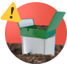
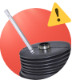

Сервисное обслуживание инженерных систем для загородных домов в Санкт-Петербурге и ЛО
+7 812 438-12-36
срочно вызвать мастера
Поможем избежать 98% проблем с инженерными сетями и сэкономить до 40 000 р. в год благодаря сервисному обслуживанию
Мы подберем индивидуальные условия договора. Защитите себя от поломок и платите только за то, что вам нужно


Какие вопросы мы помогаем решать жильцам загородных домов


Обслуживаем все популярные модели септиков
Вам нужен аварийный выезд по одному из этих или других вопросов, связанных с инженерными сетями в вашем доме?
срочно вызвать мастера
В 9 из 10 случаев проблемы с канализацией или водоснабжением вызваны некачественным обслуживанием
Затопление
Ошибки при монтаже и обслуживании приводят к попаданию воды в блок управления станции и поломке всего электро-оборудования.

Засорение фильтров
в септике или СБО
в септике или СБО
В сооружение могут попадать волосы, шерсть животных, жир и различный мусор, который необходимо регулярно чистить, иначе это приведет к затоплению станции и дорогостоящей поломке.

Сильный запах
При неправильной эксплуатации и отсутствии чистки септика вблизи станции или в помещениях может появляться неприятный запах.

Замерзание системы
При наступлении морозов очень часто замерзают отводящие трубопроводы. Поломка может случиться в результате некачественного монтажа или неправильной консервации на зиму.

Переполнение станции
Очистные системы выходят из строя при большой концентрации ила. Он накапливается в камерах, на стенках и трубках. Заиливание негативно влияет на движение жидкости, замедляет процессы и приводит к появлению неприятных запахов .

Износ мембран компрессора
Если вовремя его не предотвратить придется ремонтировать или даже покупать новый компрессор.